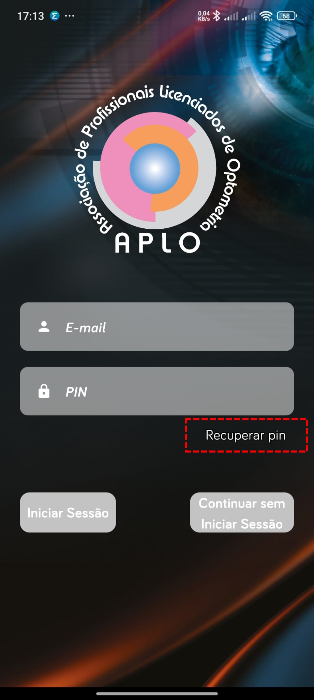
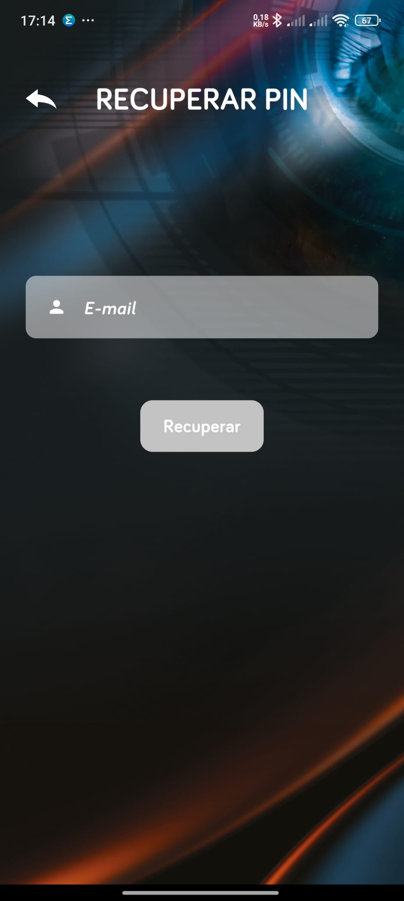
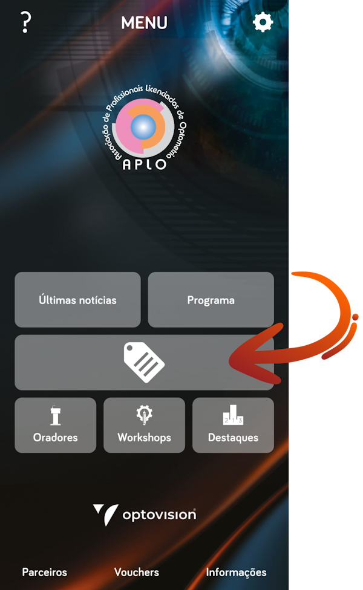
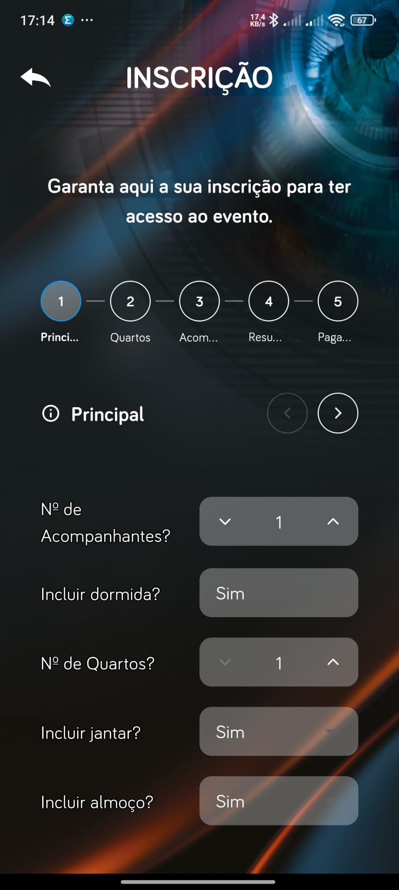
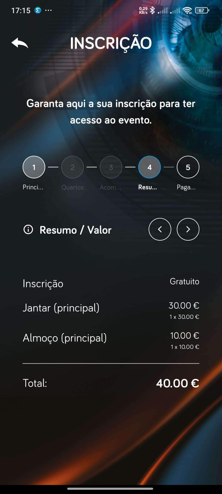
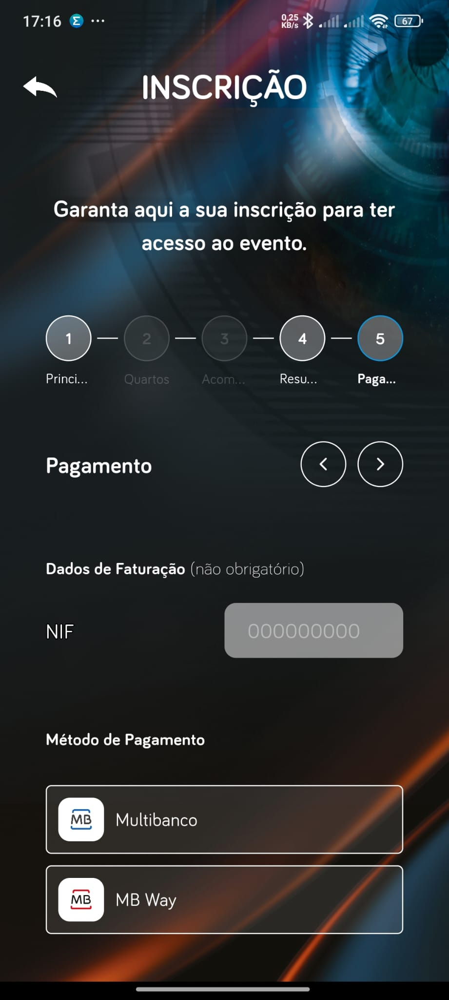
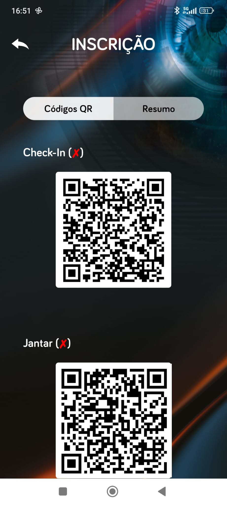

APLO App: Instruções de Acesso e Inscrição nas Conferências Abertas de Optometria 2025
A nova já está disponível para Android e iPhone e foi desenvolvida para facilitar a comunicação com os membros, simplificar processos e melhorar a experiência em eventos como as Conferências Abertas de Optometria 2025.
Através da App APLO pode:
- Inscrever-se nas Conferências Abertas de Optometria 2025;
- Inscrever-se nos Workshops;
- Consultar o programa;
- Ver informação detalhada sobre cada sessão;
- Receber notificações importantes;
- E muito mais.
1. Como Aceder à Área Reservada da App
Passo 1: Descarregar a App "APLO" para o seu dispositivo:
Passo 2: Caso ainda não tenha o seu PIN ou não se recorde:
- Pressione "Recuperar PIN" na App.
- Utilize o email com que a APLO habitualmente o contacta.


Passo 3: Verifique a sua caixa de entrada (ou SPAM/lixo eletrónico) e abra o email com link para definir novo PIN de 4 dígitos.
Em caso de dificuldade, responda ao email onde recebeu este documento.
(A app poderá indicar uma mensagem de "ERRO - Verify your email" ao tentar recuperar o PIN. Isto é normal e não afeta o processo de recuperação do PIN. Verifique a caixa de entrada e a pasta Spam do seu email para encontrar o link de recuperação do PIN.)
Passo 4: Com o PIN reposto, faça login normalmente.
2. Como Inscrever-se nas Conferências Abertas de Optometria 2025
Passo 1: Pressione o botão central (credencial) na App para iniciar a inscrição.

Passo 2: Se desejar, adicione:
- Alojamento;
- Refeições;
- Acompanhantes e respetivas opções.

Passo 3: Visualize o resumo da inscrição:
- Valor por opção (alojamento/refeições);
- Valor total a pagar.

Passo 4: Escolha o método de pagamento.

Passo 5: Após o pagamento ser validado:
- Na mesma área da App estarão disponíveis os QR Codes de acesso às conferências e refeições reservadas.

Incentivamos todos os membros da APLO a instalarem a App para uma experiência mais fluida, informada e simples.
Em caso de dúvida, contacte-nos. Estamos ao dispor para ajudar!